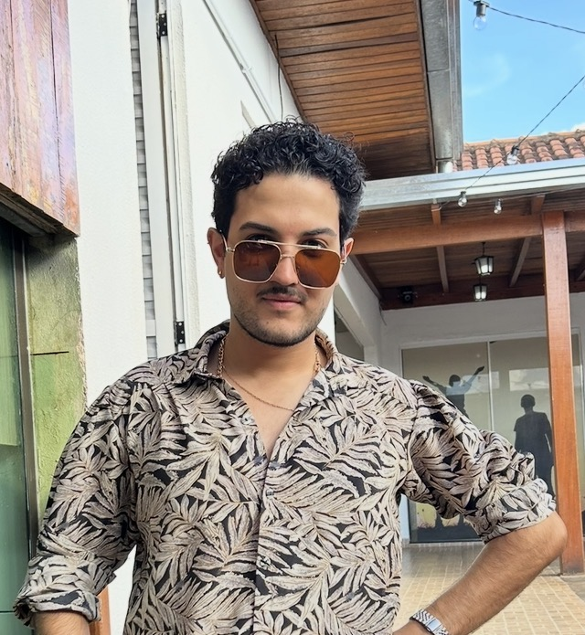

Engenheiro de Dados e Analytics Engineer em Cascavel, PR.
Conhecer Trajetória
Eduardo Fabian de Oliveira combina uma mentalidade técnica rigorosa com uma visão estratégica de negócio. Especialista em infraestrutura de Dados, redes e produtividade.
Autor de pesquisas sobre Redes Neurais aplicadas a turbinas hidráulicas, com participações no COBEM e Latinoware.
Liderança da modernização tecnológica: Pipelines ETL/ELT (Python/SQL), Modelagem Star Schema e Dashboards em Power BI.
Estratégias de growth e gestão de campanhas digitais e eventos de grande porte.
Desenho técnico e estrutural.